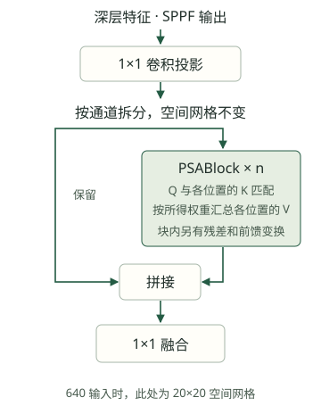
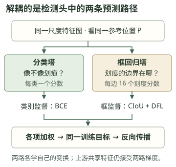

目标检测 / YOLO 系列 / 标准水平框检测
YOLO11 怎样从一张图里找到目标？
假设要在一张二手手机侧面照片上框出边框损伤。手机摔碰后，金属边缘可能留下一个小缺口，这里的“磕碰”指这种真实损伤。完好的边框也可能把灯光反射到镜头，照片里出现一条亮带，这里的“反光”指这种成像现象。两者局部都可能显得很亮，但只应给真实损伤画框。下面借这个假想例子，沿着照片走一遍 YOLO11 的检测流程。
前四节单独讲 YOLO11：特征、框表示、样本分配、损失与去重。第五节才对照 v5、v7、v8、11，第六节讨论使用条件。实现以 Ultralytics v8.3.0 发布时的标准 Detect 为准；软件版本号不等于模型名。
01 · 放回 YOLO 系列的位置
一次前向，在三个尺度提出候选框。
YOLO11 是单阶段的密集检测器：整张图进入网络，模型直接在一组空间位置预测类别和框，不需要先裁出一批疑似区域再分别识别。理解整网，先认清三段各交付什么。
- 主干网络（Backbone）提取特征。浅层网格较密，保留边缘和位置细节；越往深层，每个位置能综合更大范围的信息，但空间定位更粗。
- 特征融合（Neck）把细节和语义放到一起。深层先上采样，与较细的层拼接；融合后的细层再逐级下采样，把定位信息带回较粗的层。每个尺度不必只依赖自己那一层看到的东西。
- 检测头（Head）把特征变成答案。输入为 640×640 时，在 80×80、40×40、20×20 三个尺度分别预测，共 8,400 个候选位置。一个候选可以报一个完整目标框；最终留下几个框，还要看分数与去重。

对应实现：网络配置 · Detect 的两条分支与解码 · 分配和损失。
02 · 主线① 特征提取与多尺度融合
C3k2 汇合不同深度的特征，C2PSA 让不同位置交换信息。
看 C3k2，先分清拼接和相加。它和 CSPNet 的相似之处是分路：先用 1×1 卷积投影，再把通道分成两组，一组走短路，另一组连续变换。假设长路做两步，出口得到短路特征、长路起始特征、第一次变换结果和第二次变换结果。这四组按通道拼接；例如每组 32 个通道，就得到 128 个通道，再交给 1×1 卷积学习怎样混合。短路传的是特征值，并没有把某个权重直接加到长路上。
图里的第 1 次、第 2 次是先后顺序，不是两个备选方案。第 2 次读第 1 次的输出。两次采用同一种内块，各自学习一套参数。在建立这一层时才选类型：可以每次用一个 Bottleneck（瓶颈块），也可以每次用一个 C3k。后者内部又分短、长两路，长路在这里包含两个瓶颈块，然后再拼接融合。这样做给出口保留了不同加工深度的特征，并不保证信息毫无损失。
换到 C2PSA，外形相似，长路上的运算换了。同样是一支保留、一支变换、末端拼接，但变换支里有空间自注意力。以 640×640 输入为例，主干末端是 20×20 个位置。假设疑似损伤落在这张特征图第 5 行第 3 列，那么同图第 5 行第 15 列就是一个“远处位置”。每格表示一个有上下文的区域，不是原图上一个孤立像素。
一个位置怎样从远处读回信息？
把注意力分支的特征图暂时缩成一行三格，从左到右叫 A、B、C。每格有两个通道，记为 (a, b)。1×1 卷积只读当前格，用不同的卷积核组合这两个数，算出 Q（拿什么去匹配）、K（拿什么被匹配）、V（实际传过去什么）。三格共用这些核；要到 Q 和其他位置的 K 比较时，远处才参与进来。
先选 A 发问，看 C 拿到多少份额。保持 A 不动，只把 C 从 (4, 1) 换到 (8, 1)，再看最终读回；随后换成 (4, 0) 看分母。对比这两次改动，就能分清“匹配得有多好”和“读到什么内容”。
实验只算一个注意力头的加权读数，为了手算让 Q、K 各只有一维，缩放因子为 1。真实 YOLO11 会除以键维数的平方根，每个头分别按空间位置做 Softmax；加权结果还要加上从 V 得到的局部位置信息，再做输出投影。它只是 C2PSA 变换支的一段，不等于整块的最终输出。
这种空间自注意力在 YOLO11 之前出现过吗？
有。2018 年 CVPR 的 Non-local Neural Networks（图 2，Embedded Gaussian）已经用点投影比较不同位置，再逐行归一化，读取各位置的内容。文中的 θ、φ、g 分别对应这里的查询、键和值。YOLO11 的特点是把多头注意力放在主干末端，只处理部分通道，还保留局部卷积路径。连“在最低分辨率层上，只取部分通道做全局注意力”也有前例：见 YOLOv10 的 PSA，图 3(c)。
SPPF、C3k2、C2PSA 各自汇合的是什么？SPPF 汇合不同大小的邻域，在 v8 已经存在；C3k2 汇合不同加工深度的分支，和 v8 的 C2f 一样会保留中间特征；C2PSA 则按当前图片的内容汇合不同空间位置的信息。回到手机照片，第三种能力可以帮助判断局部亮斑是否属于一整条反光带，但不能把缩图时已经消失的细划痕恢复出来。


回到边框：如果一个可疑亮斑和远处完好边框上的高光属于同一条连续亮带，这段远处信息可能支持“反光”的判断。但真实缺口也可能同时反光；网络没有“连成亮带必然正常”的规则。这个假想例子解释的是多了一种可用的判断依据，不是 YOLO11 已经能区分这两者的实测结论。
03 · 主线② 预测头与边界框表示
知道疑似目标在哪个格子，怎样画出完整的框？
YOLO11 是 Anchor-free：网格提供参考点，不预设框的宽高。这里新设一个纯几何算例，与前面的反光例子无关：假设一张 640×640 输入照片里有一条水平划痕，人工标注框的左上角是 (4,16)，右下角是 (84,24)，宽 80、高 8 像素。看步长为 8 的特征层，假设参考点 (44,20) 被选来学这个框。以下数字是为了算得清楚，不来自现场照片或模型输出。
框如何还原：从该点到左、上、右、下边界分别是 40、4、40、4 像素，换成这层网格单位就是 5、0.5、5、0.5。左边用 44−5×8 得 4，上边用 20−0.5×8 得 16；右边和下边则加回去。参考点不必在目标正中央，换一点，四个距离会变，仍可还原同一框。
为什么每边输出 16 个数？半个格子的距离怎么学？
每条边用 0 到 15 的整数刻度表示距离。训练时，DFL 对非整数距离监督相邻两档：例如 0.5 对 0、1 两档各给一半权重。推理时将每条边的 16 个输出分别做 softmax，再取加权平均，距离就可以落在整数之间。每个位置共 4×16 个框通道，加上各类分数；这 64 个数描述的是一个框，不是 64 个框。
同一个已标注目标，识别对了类别仍可能画不准边界。下面暂时不讨论分类，只看位置偏差。
一个 80×8 的划痕框，横向和纵向各偏 2 像素，差多少？
实线是人为设定的水平划痕标注框；虚线是假想的预测框，宽高相同，只改变位置。左右两组都是同一个标注的副本：左图只横移，右图只纵移。IoU 等于两个框的交集面积除以并集面积。
以偏移 2 像素为例：横移后仍重叠 78×8 像素，IoU＝78/82≈0.951；纵移后只重叠 80×6，IoU＝6/10＝0.600。差异来自标注框只有 8 像素高。滑块只计算两个矩形的重叠，不运行检测器，也不代表实际照片里的划痕一定可见。
04 · 主线③④⑤ 分配、损失与去重
训练时挑谁学这个框，推理时又留下哪个框？
先分配，再算损失。照片只有一个标注框，但附近多个位置都能报框。每批训练图前向后，TAL 在参考点落入标注框的候选中，综合目标类别分数和定位质量排序。标准配置每个标注先取前 10 名，再处理有效位置和标注间的争用。固定的是名额，排名随这次前向的预测而变。前一节选的点只用于算例，不保证每次都被分到。
得到责任，才知道误差算在哪里。正位置的框用 CIoU 约束整体几何，再用 DFL 约束四边的距离分布。分类用 BCE：正位置学带匹配质量的类别目标，背景位置对所有类别的目标都是零。因此类别输出本身也要把背景压到低分，YOLO11 不需要另乘一个目标性分数。框和类别仍各有自己的末端卷积：框分支估计四边距离，类别分支以逐通道 3×3 看每个通道的邻域，再用 1×1 混合通道。
推理时没有标注。这时不再做 TAL，也不算损失。网络解码出框，按类别分数筛选；由于训练允许多个位置学同一目标，几个高分框可能圈住同一处磕碰。标准推理用 NMS 保留得分高的框，抑制与它高度重叠的同类候选。NMS 的 IoU 阈值太低时，相邻的两处真实损伤也可能只留下一个框；另一个框被抑制，两个框的坐标并没有合并。

用熟悉的 YOLOX 对照：中心、宽高、两角和目标性，哪些是网络的输出？
以前一节的标注框为例，左上角 (4,16)、右下角 (84,24)，所以框中心是 (44,20)，宽高是 80×8。YOLOX 从网格位置预测中心偏移和宽高参数，解码为 (44,20,80,8) 四个数。由中心减、加半宽半高就能得到两个角点，无须网络另外预测角点。常说的“第五个数”是目标性分数，不是第五个点。
YOLO11 改的是坐标表达：用已知参考点和四条边距确定同一个框。参考点可以在 (36,20)，与框中心相差 8 像素；此时左、上、右、下就是 (32,4,48,4) 像素，仍还原出同一个框。两种表示都能唯一确定水平框；四边分布的作用是让每条边分别接受相邻距离档位的监督，不是让网络输出五个点。
框的表示、任务解耦、目标性是三项选择。两种模型都把末端的分类特征与定位特征分开。YOLOX 从定位特征另读一个目标性分数，推理时乘类别分数。YOLO11 直接用带质量监督的类别分数筛候选，背景位置所有类别的监督值都为零；因此不再额外输出或相乘一个目标性分数。DFL 只监督几何距离，没有接管“是不是目标”这项工作。
逐通道 3×3 和 1×1 各做什么？
把特征图想成两张叠放的网格，也就是两个输入通道。逐通道 3×3 看邻居：在第一张网格上，用属于这一通道的卷积核读取当前位置及周围八个格子，得到一个数；在第二张网格上，用另一组核只读第二张的九个格子。两路先不混，这就是“提取空间信息”。这些邻居是特征图位置，而每一组学到的核在各个空间位置重复使用，并非像自注意力那样随当前图像重新计算远处位置的权重。
1×1 混通道：对准同一个位置，读取两张网格刚算出的两个数，加权组合成新的输出通道。假设需要 3 个输出通道，每位置的普通 3×3 卷积要做 9×2×3＝54 次乘加；分成逐通道 3×3 和逐点 1×1，只需 9×2＋2×3＝24 次。节省来自把两种运算拆开，不要求 1×1 一定降维。这里仅比较卷积乘加数，不代表硬件延迟按同比例降低。
TAL 的 K 固定，为什么仍叫动态分配？
该版本的训练匹配分数是 s0.5 × u6：s 是候选对真实类别的当前预测分数，u 是预测框与标注框之间截到非负值的 CIoU，两个指数是配置好的。为了看清排序，暂设 K＝1，并假定只有两个框内候选：左边位置的 (s,u)＝(0.90,0.50)，得分约 0.015；右边是 (0.64,0.70)，得分约 0.094。这一轮右边入选。
模型参数更新后，同一张图再进入训练。假设左边的 u 变为 0.80，其余不变，左边得分就变成约 0.249，超过右边。入选者换了，但 K 和指数没变。算法每次看当前预测有多好，不读取上一次的分数，也不奖励变化速度。标准 K＝10 表示先排前十，受框内候选数量和多个标注争用影响，最后不必恰好十个；SimOTA 则连每个标注的 K 都根据当前候选估算。
读源码：想改注意力、检测头或样本分配，从哪里下手？
改特征：先在模型配置里找到 SPPF 后的 C2PSA，再去 block.py 看它怎样保留输入形状。要检验深层注意力对反光误报是否有用，可保留该节点和两侧投影，只让注意力分支跳过其中的自注意力运算作为对照；固定数据划分和训练设置，报告误提示与召回，不把整网增益归给一个模块。
改预测：从 head.py → Detect 找框分支与分类分支；先用一张 640 输入核对各层网格和输出通道，再检查解码是否仍能还原已知框。改监督：从 loss.py → v8DetectionLoss 跟进 tal.py → TaskAlignedAssigner。名称里虽有 v8，发布版 YOLO11 的标准 Detect 也使用这套损失。换分配规则后，先统计细小标注实际分到几个正样本，再看召回变化。
训练损失和分配参数 · TAL 如何筛选候选 · YOLO11 的分类与框分支 · YOLOX 的框、目标性与类别输出 · 动手试 NMS。
05 · 横向对照 常规水平框检测
四版解决同一件事，选择不同主要发生在两个地方。
第一处是怎样组织特征计算；第二处是一个位置怎样报框、哪些位置有资格学框。四者都是单阶段密集检测，下面的标准三尺度版本常规推理都用 NMS。v7 来自另一作者团队，表格按机制对照，不代表每一版都直接继承前一版。
窄屏可横向滑动表格。每个版本名可打开独立专题。
| 版本 / 专题 | 特征怎么组织 | 怎样报框、怎样学 | 直接收益与代价 |
|---|---|---|---|
| 经典 YOLOv5 | C3 分两路，深层用 SPPF，三个尺度双向融合。 | 每位置 3 个宽高模板；按宽高比和邻格生成正样本。框用 CIoU，目标性和类别分别用 BCE。 | 已有模板和解码链路可复用；换数据后要检查模板覆盖率，尤其是极端长宽比。模板不是框大小的硬上限。 |
| YOLOv7 | 聚合不同深度的特征；标准 P5 头前的 RepConv 可把训练分支折叠成部署卷积。 | 仍用模板、框、目标性和类别。默认训练路径先筛候选，再按预测代价动态匹配；正样本用 CIoU 学框，多类别时用 BCE 学类别，目标性也用 BCE。 | 训练可利用多分支，部署不必原样执行这些分支；要核实选的配置、折叠与导出是否等价。辅助头并非每个型号都有。 |
| YOLOv8 | C2f 把中间结果也送去拼接，SPPF 后接双向融合。 | 每位置一个参考点，框改为四边距离分布，不再单列目标性；TAL 分配，BCE、CIoU 和 DFL 监督。 | 省去宽高模板的配置，分类和定位各学自己的末端特征；仍有参考点覆盖与分辨率限制。旧的按模板解码和分数阈值不能照搬。 |
| YOLO11 | C3k2 选择不同内块，SPPF 后的 C2PSA 让部分深层通道聚合远处信息。 | 基本延续 v8 的参考点、四边分布、TAL 与 NMS；发布版分类塔使用逐通道卷积与 1×1 卷积。 | 可在较小模型中兼顾上下文和计算量；注意力不能挽回缩放时丢掉的信息，实际收益和延迟要看任务与后端。 |
用同一张 640 图检验理解：三个尺度一共还是 8,400 个位置。上述经典 v5、标准 v7 每位置用三个模板，所以是 25,200 个原始框候选；v8、11 每处一个，是 8,400 个。候选少并不直接等于延迟缩短三倍：主干计算、各头的通道数和后处理工作也不同。
优劣要找可对照的证据。官方 640 输入、COCO val 检测表中，v8n 为 37.3 mAP50–95、3.2M 参数；11n 为 39.5、2.6M。可以说这组公开权重以更少参数取得更高总体 AP，不能据此断言是 C2PSA 单独带来的，也不能推断手机磕碰的召回。尤其不要直接比两张表里的 GPU 毫秒数：v8 表使用 A100，11 表使用 T4。
v5 配置 · v7 作者论文 · v7 标准配置 · v8 官方指标 · 11 官方指标。
v6、v7 的重参数化和 v9 的 PGI：训练分支走了，究竟留下什么？
RepConv 留下等价计算。在 v6、v7 采用这种块的地方，同一输入走几个卷积分支，输出在非线性激活前相加。部署时用固定统计量把各支 BN 折进卷积，把 1×1 核补零到 3×3 的中心，再把对齐的核和偏置分别相加。有恒等分支时也转换后计入。对同一输入，合并后仍算出原来的结果，只可能有浮点舍入差。
PGI 留下对主干的训练影响。v9 的辅助路读取主干多个尺度的特征，获得额外监督；共享层一次反向传播收到主损失和辅助损失的梯度。推理只取主路预测，主路的前向并不读取辅助头输出，所以辅助路可以去掉，不必把它的参数加进主路。这不等于从头就不训练辅助路也会学到同一套权重。
“可逆”另有所指：它关心从输出能否恢复输入特征，不是删除训练分支的方法。典型 RevNet 把输入拆成两份，前向逐步相加，倒推时反序相减；不需要求两个内部子网络的逆。v9 借可逆结构缓解训练中的信息丢失，不要求主检测网络反向重建原图。v7 论文既有可折叠的卷积，也另讲训练辅助头；两种机制可以用在同一模型中。
RevNet 的可逆块 · RepVGG 的卷积核折叠 · YOLOv6 · YOLOv7 · YOLOv9 图 3 和 §4.1 · YOLOv9-C 的实际路由。
四版各记住什么？把模型特点与阅读顺序分开。
从输入走到 NMS 是阅读一台检测器的顺序，不是 YOLO11 的创新。下列入口直接跳到各自最有辨识度的部分；一个版本值得学习，也不代表每个组成模块都由它首创。
- 经典 YOLOv5｜如何把带先验框的三尺度检测做成可检查、可训练的基线？ 指老仓库的经典模型：每格多个宽高模板，能检查模板是否覆盖自己数据的形状。检测、训练和导出的工程工具链也是它的价值。
- YOLOv7｜训练时增加分支，部署时为什么不必付出同样的计算？ RepConv 可以把满足条件的线性分支折叠；用于聚合多种深度特征的 ELAN 路径则仍留在推理图里。不能把所有分支都删掉。
- YOLOv8｜无模板检测配方，加上检测、分割共用的开发接口：把 C2f、解耦头、四边距离分布和 TAL 组合成常用基线。它没有首创四边距离；工程上值得单独记的是，换用分割模型和相应数据后，训练、预测、导出仍沿用熟悉的接口。
- YOLO11｜保留无模板检测路线，重新安排特征加工与计算开销：C3k2 可分阶段配置内块；C2PSA 在粗网格上让部分通道使用空间注意力，分类分支则用轻量卷积。识别这些改动，要与多代共有的三尺度预测和 NMS 分开。
从熟悉的 YOLOX 再核对一次（可选）
同一个 80×8 的框，YOLOX 在步长 8 的层上报中心偏移 (0.5,0.5) 和原始宽高 ln(10)、0；YOLO11 从格子中心报四条边。两者都不用宽高模板，但前者用 SimOTA 和独立目标性分数，后者用 TAL、直接读类别分数。为什么取消模板 · 为什么解耦头不保证推理更快 · 并排看结构图。
06 · 主线⑥ 选型与实测
换到真实照片，哪个版本更合适？
以乐收的二手手机报价辅助为例：岗位要求列了 v5、v7、v8、11，重点是理解网络结构、损失函数、正负样本分配，并能改动源码。实际选型有另一条证据：工程师确认选定的是 YOLO11 系列，数据清洗最费时间。输入包括日常随拍和其他平台转来的低质量图，高峰约每秒 50 张，传图也有延迟。没有材料说明四种模型都已上线，也没有说明团队为何没选 26。
这里的 50 张/秒是高峰进图量：若以同样速率稳定处理，服务平均每 20 毫秒要完成一张。它不是摄像头帧率，也不是“每张照片从上传到出结果最多 20 毫秒”。多张可以同时在途；单张等待包括传图、排队、预处理、前向、后处理和回传。只测一张图的 GPU 前向，不能验证整个服务接得住高峰。
随手拍让 11 更有优势吗？它具备利用远处上下文的机制，这给出了可以检验的假设：当局部外观相似、但周围确实有区分线索时，11 有机会少报一些反光。模型也可能学到门店、背景或拍摄角度的偶然联系，换来源后优势消失。单凭结构、版本号或 COCO 均分，推不出乐收照片上的胜负。
- 用同一批照片比两个版本。以现有 11 和同量级的 v8 作对照，同一手机的不同视角放在同一划分，另留不同门店或图片来源做测试。固定输入大小、训练预算与验证集上的误提示水平；分别比较斜拍、反光、低照度和压缩图上的损伤召回。要把收益单独归给注意力，再做只改该模块的消融。
- 先验框、参考点分别指什么？经典 v5 的模板是预定义的一对宽、高，例如 32×16；不是图上人工标好的真实框。训练可检查实际标注能通过哪些模板的形状筛选。v8/11 没有这组宽高，检查框内是否有合格参考点，以及它们在 TAL 里如何排序。YOLOX 也没有宽高模板，但它先看空间候选，再由 SimOTA 估计名额、按代价选人，不能照搬 TAL。样本分配是训练诊断；排查线上漏检时，则看 NMS 或分数过滤之前有没有候选。
- 最后比服务表现。同硬件、输入、精度和并发策略回放高峰流量，记录稳定吞吐、队列以及端到端 P95，分开看传图、排队、推理和后处理。26 的免 NMS 路径值得作为附加实验；若主要耗时在传图，省掉 NMS 不会解决主要瓶颈。
场景依据：11 月 20 日留存的乐收岗位任职要求，及 11 月 25 日工程师反馈和报价师演示记录。以上是建议的评估方法，不是公司已完成的四版实验。
为什么 11 没有沿用 v10 的免 NMS：事实到哪里为止？
清华团队等人的 YOLOv10 论文于 2024 年 5 月 23 日首次提交；Ultralytics 在同年 9 月下旬公布 YOLO11。两者相隔约四个月，出自不同团队。Ultralytics 在文档中说明没有发表正式的 YOLO11 研究论文；公开日期不能证明 5 月时设计已经定稿，也不能证明是排期阻碍了采用。
能够从实现确认的是技术差别：v10 训练时用一对多辅助和一对一分支，并以一致的匹配度量协调二者，部署使用一对一分支减少重复预测；标准 YOLO11 采用一对多训练，用 NMS 处理重复候选。直接把后处理里的 NMS 关掉，不会得到 v10 那样的一对一预测能力。在所查发布说明和官方文档中，没有找到作者把这项取舍归因于发布时间。
v10 原论文及首稿日期 · 11 发布公告 · 11 官方出版说明 · v10 双分配图解 · 26 的两条推理路径。
回到 四版专题入口 · YOLO 系列六条主线